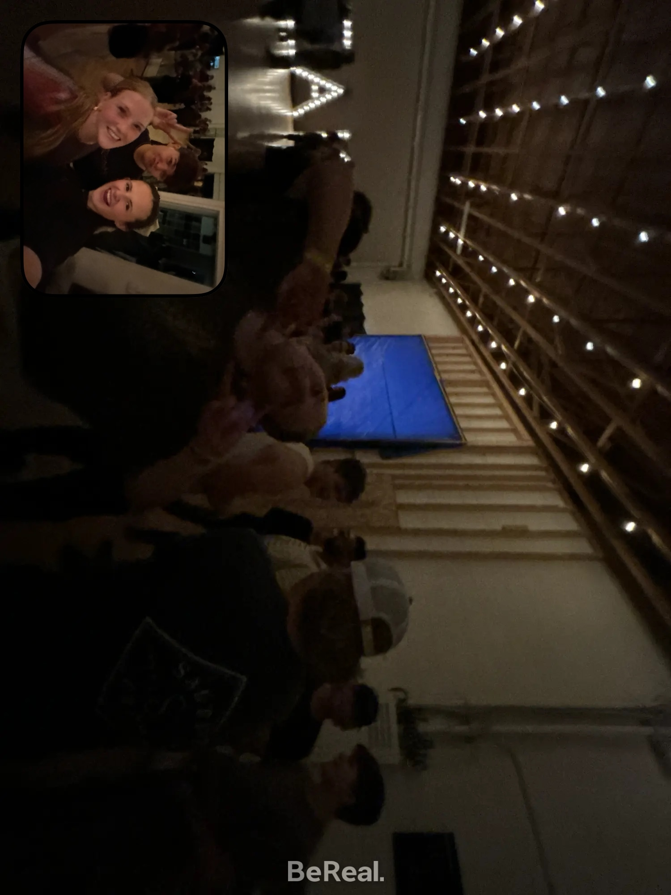
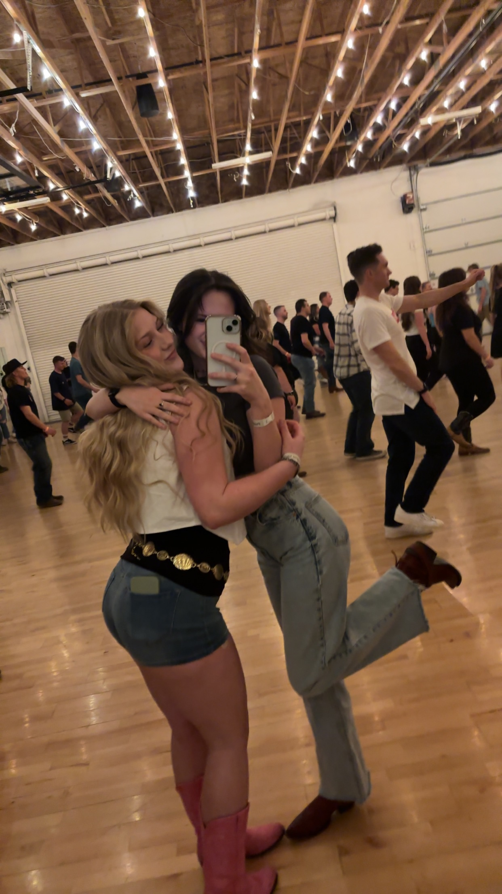

From age 3 on, I have loved to dance. I might not have always been all that good at it, but I would dance and sing whenever a song came on. It was my favorite thing to do. My mom would post videos of me and my sister's performances on YouTube growing up. This is one of my favorites — I'm in the back middle at the beginning.
In middle school, I dislocated my knee and lost my love for dancing — something I never anticipated happening. I struggled through high school to find something that would fill that void. For a while, that was choir. I met some of my best friends through choir and I wouldn't trade that experience for the world. Then, when I was no longer enjoying the environment, I helped run the merch store at my school. I loved that with my whole heart, but I still felt like I needed more. I tried golf and really enjoyed it, but then my knee pain came back and I couldn't force myself to golf anymore.
During my senior year, a couple weeks after I turned 18, my friends convinced me to go country swing dancing. When I tell you I was skeptical, I mean it.
To no one's surprise, I fell in love with dancing again. It brought me back to a place I had been craving. It was a way I could be active, social, and learn new things.
A few months into dancing, I was offered a job to be an instructor at a place in South Provo, called Peak Nights. I was so flattered. There was one condition to the job: I had to prove I could effectively teach a line dance. I practiced and practiced until I didn't have to think about what move came next in a line dance called "I See Country" by Ian Munsick. I got the job and began instructing a couple weeks later.
I was not a natural, but I worked and worked on it until I no longer felt at all out of place.
Country dancing is not in any way exclusive to Utah, but we have many places to dance here. In Utah County alone, we have: